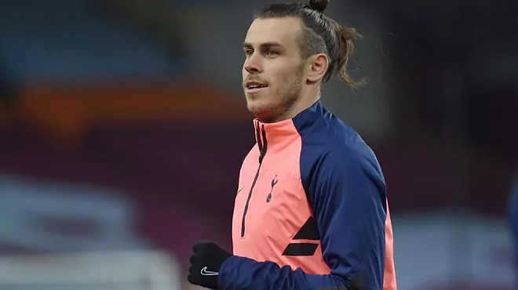

Video Bale lên kế hoạch trở lại Real ( Nguồn: ABCD )
Hợp đồng giữa Bale và Real còn hạn đến tháng 6/2022. Nếu Tottenham không mua đứt Bale, đội bóng Tây Ban Nha sẽ phải nhận lại và tiếp tục trả anh mức lương 22 triệu USD mỗi mùa.
Bale từng chơi 251 trận cho Real, ghi 105 bàn và thực hiện 68 đường kiến tạo. Trong bảy năm gắn bó với sân Bernabeu, anh giành bốn Champions League và hai La Liga.

Vấn đề lớn nhất của Bale hiện nay là sự hắt hủi của HLV Zinedine Zidane. Mùa 2019-2020, ngôi sao 31 tuổi chỉ chơi 20 trận, gồm chủ yếu những lần vào sân từ ghế dự bị.
Mùa này, lợi ích duy nhất của Bale là được chơi nhiều hơn. Anh đã tích lũy đủ thể lực để chơi ba trận sắp tới của tuyển Xứ Wales với Bỉ, Mexico và CH Czech.
"Vài năm qua, có lẽ giờ là lúc tôi có thể lực tốt nhất. Tôi cảm thấy sảng khoái và sẵn sàng thi đấu. Khi mọi thứ diễn ra không quá tốt ở một CLB, thật tuyệt khi được ra đi. Chúng tôi phải tập trung vào những trận đấu tới của đội tuyển. Chúng rất quan trọng. Chúng tôi cần tạm thời quên đi cuộc sống CLB", Bale cho biết.
Đại nhạc hội văn hóa âm nhạc quốc tế Thế giới hát về mẹ sẽ diễn ra tối 9.5 tại Trung tâm hội nghị quốc gia Hà Nội.
Sau đây chúng ta hãy thưởng thức 01 bài nhạc nhẹ nhàng đang nằm trong top BXH Vietnam.
Hỏi chị GOOGLE
Hỏi tui nè